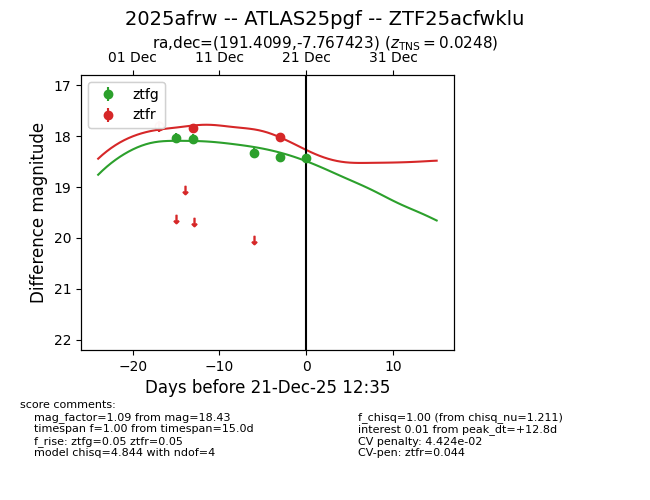
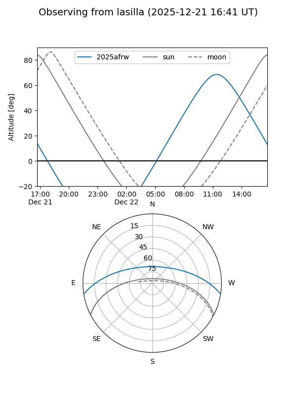
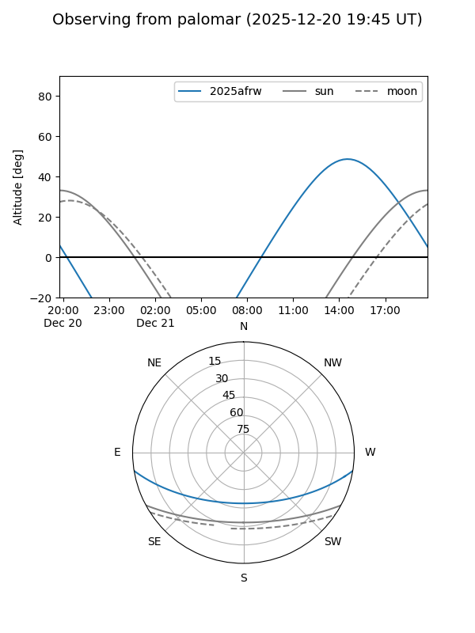
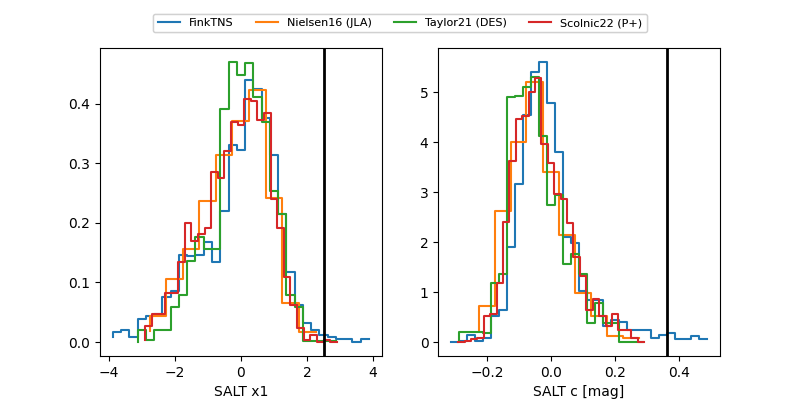

2025afrw
Target 2025afrw at 2025-12-21 12:37
Aliases and brokers:
FINK: fink-portal.org/ZTF25acfwklu
Lasair: lasair-ztf.lsst.ac.uk/objects/ZTF25acfwklu
ALeRCE: alerce.online/object/ZTF25acfwklu
TNS: wis-tns.org/object/2025afrw
YSE: ziggy.ucolick.org/yse/transient_detail/2025afrw
alt names
ZTF25acfwklu (ztf,fink_ztf)
2025afrw (tns,yse)
ATLAS25pgf (atlas)
Coordinates:
equatorial (ra, dec) = 191.4099,-7.76742
equatorial (HMS+DMS) = 12:45:38.39,-07:46:02.72
galactic (l, b) = (300.4226,+55.07607)
Flags:
likely cv
Photometry:
last ztfg=18.43, ztfr=18.01
5 ztfg, 2 ztfr detections
Lightcurve

Visibility


Additional plots
